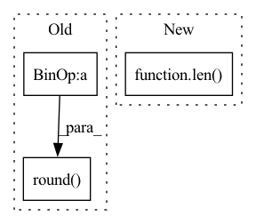

Pattern ID :27337

Before Change
return alignments, viterbi_scores
def _get_flat_start_batch(self):
lens_abs = torch.round(self.emission_pred.shape[1] * self.lens).long()
phn_lens_abs = torch.round(self.phns.shape[1] * self.phn_lens).long()
phns = self.phns.long()
After Change
def _get_flat_start_batch(self, lens_abs, phns, phn_lens_abs):
phns = phns.long()
batch_size = len(lens_abs)
fb_max_length = torch.max(lens_abs)
flat_start_batch = torch.zeros(batch_size, fb_max_length).long()
for i in range(batch_size):
In pattern: SUPERPATTERN
Frequency: 3
Non-data size: 3
Instances
Fragment ID: 81250318
Project Name: speechbrain/speechbrain
Commit Name: 5dee9a491e12c79f65642448db31771edfefdea2
Time: 2020-06-04
Author: rastorge@server.mila.quebec
File Name: speechbrain/alignment/aligner.py
M Class Name: ViterbiAligner
N Class Name: ViterbiAligner
M Method Name: _get_flat_start_batch(4)
N Method Name: _get_flat_start_batch(1)
M Parent Class: torch.nn.Module
N Parent Class: torch.nn.Module
M File Name: speechbrain/alignment/aligner.py
N File Name: speechbrain/alignment/aligner.py
M Start Line: 250
M End Line: 270
N Start Line: 239
N End Line: 257
'>
Before Change
return flat_start_batch // , flat_start_lens
def _get_viterbi_batch(self):
lens_abs = torch.round(self.emission_pred.shape[1] * self.lens).long()
batch_size = len(self.emission_pred)
fb_max_length = torch.max(lens_abs)
After Change
return flat_start_batch
def _get_viterbi_batch(self, ids, lens_abs, phns, phn_lens_abs):
batch_size = len(lens_abs)
fb_max_length = torch.max(lens_abs)
viterbi_batch = torch.zeros(batch_size, fb_max_length).long()
for i in range(batch_size):
'>
Fragment ID: 81250317
Project Name: speechbrain/speechbrain
Commit Name: 5dee9a491e12c79f65642448db31771edfefdea2
Time: 2020-06-04
Author: rastorge@server.mila.quebec
File Name: speechbrain/alignment/aligner.py
M Class Name: ViterbiAligner
N Class Name: ViterbiAligner
M Method Name: _get_viterbi_batch(5)
N Method Name: _get_viterbi_batch(1)
M Parent Class: torch.nn.Module
N Parent Class: torch.nn.Module
M File Name: speechbrain/alignment/aligner.py
N File Name: speechbrain/alignment/aligner.py
M Start Line: 278
M End Line: 286
N Start Line: 265
N End Line: 271
'>
Before Change
delta = (encoding_max - encoding_min) / (2 ** tensor_quantizer.bitwidth - 1)
offset = torch.round(-encoding_min / delta)
tensor = torch.clamp(tensor, encoding_min.item(), encoding_max.item())
tensor = torch.round(tensor / delta) + offset
tensor = (tensor - offset) * delta
return tensor
After Change
delta = (encoding_max - encoding_min) / (2 ** tensor_quantizer.bitwidth - 1)
offset = torch.round(-encoding_min / delta)
if len(encoding_min) > 1:
tensor = QuantizeDequantizeFunc._per_channel_quantize_dequantize(tensor, encoding_min, encoding_max, delta, offset, tensor_quantizer._ch_axis)
else:
tensor = QuantizeDequantizeFunc._per_tensor_quantize_dequantize(tensor, encoding_min, encoding_max, delta, offset)
'>
Fragment ID: 81250314
Project Name: quic/aimet
Commit Name: 60b7bc92fca86b09f65f6e08bddea6363c95fb1b
Time: 2022-04-04
Author: quic_mangal@quicinc.com
File Name: TrainingExtensions/torch/src/python/aimet_torch/tensor_quantizer.py
M Class Name: QuantizeDequantizeFunc
N Class Name: QuantizeDequantizeFunc
M Method Name: forward(5)
N Method Name: forward(5)
M Parent Class: torch.autograd.Function
N Parent Class: torch.autograd.Function
M File Name: TrainingExtensions/torch/src/python/aimet_torch/tensor_quantizer.py
N File Name: TrainingExtensions/torch/src/python/aimet_torch/tensor_quantizer.py
M Start Line: 552
M End Line: 556
N Start Line: 577
N End Line: 583